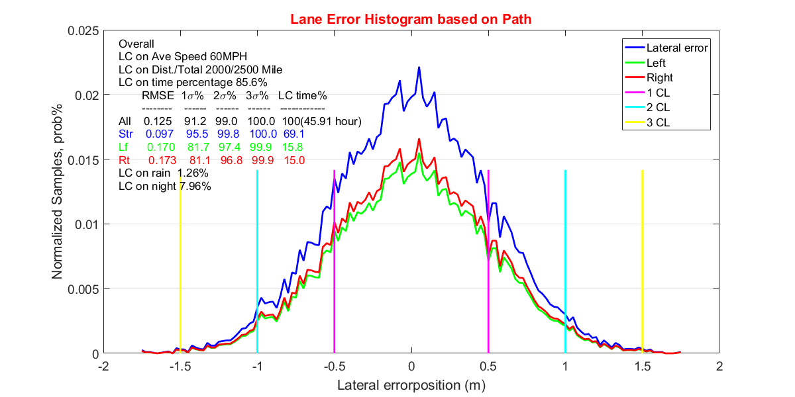

CONTROL UNIT TEST
Revision 2.0 This script is to show figures, charts, tables, plottings to test control algorithm, vehicle behavior
Contents
INITIALIZE MATLAB WORKSPACE
clear;clc;close all;
WORKSPACE ENVIRONMENT
Define object filename, filepath and other varibles needed, etc...
filename = 'testdata.xlsx'; filepath = 'C:\Users\dj5jgf\Aptiv\Autonomous Program - software_architecture\Controls Block _ Scrum Team Folder\1.0 OTTO_Platform\Otto_Test_Data\Test_Data\08_23_2018_Fowlerville\'; mat_name_0 = 'Binary101_35mph';
DATA TYPE
Define string, array, cell ...
string = 'Bin01'; var_cell = {}; d0 = load([filepath mat_name_0 '.mat']);
VARIABLES
Get variables from MATLAB/SIMULINK - MABX - ControlDesk logging
var1 = '<RxPCCrossErrorRD>'; var2 = 'CtrlCmd_FinalReferenceSpeed_mps'; var3 = 'YawRate_RoadWheelAngle'; var4 = 'Roll_Observer_RoadWheelAng'; var5 = 'LatCtrlDesRoadWheelAngleDynCGRollCompensation'; var6 = 'LatCtrlDesRoadWheelAngleDynCG'; var7 = 'LongCtrlAccLqrCrossTrafficDesAccel'; var8 = 'LongCtrlAccLqrCrossWalkDesAccel'; var9 = 'LongCtrlAccLqrCutInDesAccel'; var10 = 'LongCtrlAccLqrPrimaryDesAccel'; var11 = '<IsManual>'; % Pre-allocate variables as placeholder var1_index = 0; var2_index = 0; var3_index = 0; var4_index = 0; var5_index = 0; var6_index = 0; var7_index = 0; var8_index = 0; var9_index = 0; var10_index = 0;
INDEX SEARCHING
Find variable index in the Mat file, ps: search last one to rreplace if have multiple same names inside
for j = 1:length(d0.(string).Y) if strcmp(d0.(string).Y(j).Name, var1) var1_index = j; datapoint1 = [d0.(string).Y(j).Data(1)]; elseif strcmp(d0.(string).Y(j).Name, var2) var2_index = j; datapoint2 = [d0.(string).Y(j).Data(1)]; elseif strcmp(d0.(string).Y(j).Name, var3) var3_index = j; datapoint3 = [d0.(string).Y(j).Data(1)]; elseif strcmp(d0.(string).Y(j).Name, var4) var4_index = j; datapoint4 = [d0.(string).Y(j).Data(1)]; elseif strcmp(d0.(string).Y(j).Name, var5) var5_index = j; datapoint5 = [d0.(string).Y(j).Data(1)]; elseif strcmp(d0.(string).Y(j).Name, var6) var6_index = j; datapoint6 = [d0.(string).Y(j).Data(1)]; elseif strcmp(d0.(string).Y(j).Name, var7) var7_index = j; datapoint7 = [d0.(string).Y(j).Data(1)]; elseif strcmp(d0.(string).Y(j).Name, var8) var8_index = j; datapoint8 = [d0.(string).Y(j).Data(1)]; elseif strcmp(d0.(string).Y(j).Name, var9) var9_index = j; datapoint9 = [d0.(string).Y(j).Data(1)]; elseif strcmp(d0.(string).Y(j).Name, var10) var10_index = j; datapoint10 = [d0.(string).Y(j).Data(1)]; end end
EXCEL SHEETS LAYOUT DEFINE
Define separate sheets names, rows, columns
index_tab = [var1_index, var2_index, var3_index, var4_index, var5_index, ... var6_index, var7_index, var8_index, var9_index, var10_index]; disp(index_tab); rows = {'min'; 'max'; 'avg'; 'std dev'}; sheet1 = 'Summary'; sheet2 = 'Lateral'; sheet3 = 'Longitudinal'; sheet4 = 'YawRate'; sheet5 = 'RollObserver'; sheet6 = 'RollCompensation'; sheet7 = 'DynCG'; sheet8 = 'CrossTraffic'; sheet9 = 'CrossWalk'; sheet10 = 'CutInDesAccel'; sheet11 = 'PrimaryDesAccel'; sheet12 = '<IsManual>'; sheet = {sheet1, sheet2, sheet3, sheet4, sheet5, sheet6, sheet7, ... sheet8, sheet9, sheet10}; gap = floor(length(d0.(string).Y(1).Data)/10);
34 78 50 49 43 39 134 138 142 158
TABLE LAYOUT DEFINE
Pre-allocate variables as placeholder
datapoint1 = []; datapoint2 = []; datapoint3 = []; datapoint4 = []; datapoint5 = []; datapoint6 = []; datapoint7 = []; datapoint8 = []; datapoint9 = []; datapoint10 = []; % Find variable index in the Mat file for i= 1:length(index_tab) datapoint1 = [datapoint1 d0.(string).Y(index_tab(i)).Data(1*gap)]; datapoint2 = [datapoint2 d0.(string).Y(index_tab(i)).Data(2*gap)]; datapoint3 = [datapoint3 d0.(string).Y(index_tab(i)).Data(3*gap)]; datapoint4 = [datapoint4 d0.(string).Y(index_tab(i)).Data(4*gap)]; datapoint5 = [datapoint5 d0.(string).Y(index_tab(i)).Data(5*gap)]; datapoint6 = [datapoint6 d0.(string).Y(index_tab(i)).Data(6*gap)]; datapoint7 = [datapoint7 d0.(string).Y(index_tab(i)).Data(7*gap)]; datapoint8 = [datapoint8 d0.(string).Y(index_tab(i)).Data(8*gap)]; datapoint9 = [datapoint9 d0.(string).Y(index_tab(i)).Data(9*gap)]; datapoint10 = [datapoint10 d0.(string).Y(index_tab(i)).Data(10*gap)]; end shu = {sheet2;sheet3;sheet4;sheet5;sheet6;sheet7;sheet8;sheet9;sheet10;sheet11}; T = table(datapoint1.',datapoint2.',datapoint3.',datapoint4.',datapoint5.',datapoint6.',... datapoint7.',datapoint8.',datapoint9.',datapoint10.','RowNames',shu) writetable(T,'testdata.xlsx','Sheet',1,'WriteRowNames',true);
T =
Var1 Var2 Var3 Var4 Var5 Var6 Var7 Var8 Var9 Var10
__________ __________ __________ ___________ ___________ __________ __________ ___________ ___________ __________
Lateral -0.03 -0.135 0.025 -0.08 0.66 -0.085 -0.085 -0.005 -0.03 0.015
Longitudinal 15.635 15.635 15.635 15.635 15.635 15.635 15.635 15.635 15.635 15.635
YawRate 0.012093 0.012873 0.0054646 -0.00039091 -0.00028955 0.0097418 0.011346 -5.936e-18 -5.9272e-18 0.010119
RollObserver -0.0030124 -0.0030124 -0.0023132 -0.00016137 -0.0011204 -0.0036044 -0.0024195 -0.0010757 -0.00064562 -0.0039815
RollCompensation -0.0014 -0.0014 -0.001075 -7.5e-05 -0.000475 -0.001675 -0.001125 -0.0005 -0.0003 -0.00185
DynCG 0.0085878 0.012215 0.0034338 -0.00036983 -4.7506e-05 0.009003 0.010573 -0.00092263 0.00086082 0.0056577
CrossTraffic 9.8044 9.7916 9.8058 9.8117 8.2275 9.7898 9.8207 9.807 9.8115 9.7809
CrossWalk 9.8314 9.8186 9.8328 9.8387 8.2494 9.8168 9.8478 9.8341 9.8386 9.8079
CutInDesAccel 11.237 11.231 11.239 11.241 9.2259 11.226 11.246 11.245 11.241 11.22
PrimaryDesAccel 11.237 11.231 11.239 11.241 9.2259 11.226 11.246 11.245 11.241 11.22
FEED DATA TO EXCEL
meter/s to mile/h
n = 2.24; for i= 1:length(sheet) if i>= 2 i = i -1; % fixed pos for spread sheet A1_pos = 'B1'; B1_pos = 'A2:A5'; x = d0.(string).Y(index_tab(i)).Data; [min_x, max_x, avg_x, std_x] = cal_x(x); columns = {'Units m/s','Units mph'; min_x,min_x*n; max_x,max_x*n;... avg_x,avg_x*n; std_x,std_x*n}; % spread sheet xlswrite(filename,columns,sheet{i+1},A1_pos) xlswrite(filename,rows,sheet{i+1},B1_pos) % summary sheet A_sumpos = strcat('A', num2str(i*6-5)); A_sumrange = strcat('A', num2str(i*6-4), ':A', num2str(i*6-1)); B_sumrange = strcat('B', num2str(i*6-5)); xlswrite(filename,{sheet{i+1}},sheet{1},A_sumpos); xlswrite(filename,columns,sheet{1},B_sumrange) xlswrite(filename,rows,sheet{1},A_sumrange) i = i + 1; end end xlswrite(filename,{'Take-over'},'Take-over','A1') xlswrite(filename,{'Take-over times',cal_m(d0.(string).Y(1).Data);},'Take-over','B1')
FIGURE GENERATION
plotting;
FUNCTION 1: STATICS CALCULATION
Figure out min, max, average, std dev ...
function [min_x, max_x, avg_x, std_x] = cal_x(x) min_x = min(x); max_x = max(x); avg_x = mean(x); std_x = std(x); end
FUNCTION 2: TRIGGER CHECK
Find how many times driver take over from Auto mode to MANUAL mode
function manual = cal_m(m) manual = diff(m); manual = sum(manual(:)==1); end
FUNCTION 3: DATA ANALYSIS IN FOGURE
Plot some feaures and analyze them
function plotting mu = 0; sigma = 0.5; num = 20000; range = -3.5:0.05:3.5; range = range*sigma; string1 = 'Lateral error'; xlab = strcat(string1, 'position (m)' ); len = 0.64; % Plotting/ Figure setting hfig = figure(1); set(hfig, 'Position', [700 400 1200 600]); x = mu + (sigma) * randn(num,1); [counter, center] = hist(x, range); plot(center, counter/num,'-b','LineWidth',2); hold on; plot(center, counter*0.7/num,'-g','LineWidth',2); plot(center, counter*0.75/num,'-r','LineWidth',2); len_p = max(counter/num)*len; ax = gca; ax.YGrid='on'; ax.FontSize = 14; % Text/axis plot([-sigma, -sigma], [0, len_p],'-m','LineWidth',2); plot([-2*sigma, -2*sigma], [0, len_p],'-c','LineWidth',2); plot([-3*sigma, -3*sigma], [0, len_p],'-y','LineWidth',2); legend(string1, 'Left', 'Right','1 CL', '2 CL','3 CL'); plot([sigma, sigma], [0, len_p],'-m','LineWidth',2); plot([2*sigma, 2*sigma], [0, len_p],'-c','LineWidth',2); plot([3*sigma, 3*sigma], [0, len_p],'-y','LineWidth',2); text(-1.9,0.024,'Overall','Color','black','FontSize',13) text(-1.9,0.023,'LC on Ave Speed 60MPH','Color','black','FontSize',13); text(-1.9,0.022,'LC on Dist./Total 2000/2500 Mile','Color','black','FontSize',13); text(-1.9,0.021,'LC on time percentage 85.6%','Color','black','FontSize',13); text(-1.75,0.020,'RMSE 1\sigma% 2\sigma% 3\sigma% LC time%','Color','black','FontSize',13); text(-1.75,0.019,'-------- ------ ------ ------ ------------','Color','black','FontSize',13); text(-1.9,0.018,'All 0.125 91.2 99.0 100.0 100(45.91 hour)','Color','black','FontSize',13); text(-1.9,0.017,'Str 0.097 95.5 99.8 100.0 69.1','Color','blue','FontSize',13); text(-1.9,0.016,'Lf 0.170 81.7 97.4 99.9 15.8','Color','green','FontSize',13); text(-1.9,0.015,'Rt 0.173 81.1 96.8 99.9 15.0','Color','red','FontSize',13); text(-1.9,0.014,'LC on rain 1.26%','Color','black','FontSize',13); text(-1.9,0.013,'LC on night 7.96%','Color','black','FontSize',13); %grid on; hold off; xlabel(xlab); ylabel('Normalized Samples, prob%'); title('Lane Error Histogram based on Path','Color', 'r'); end